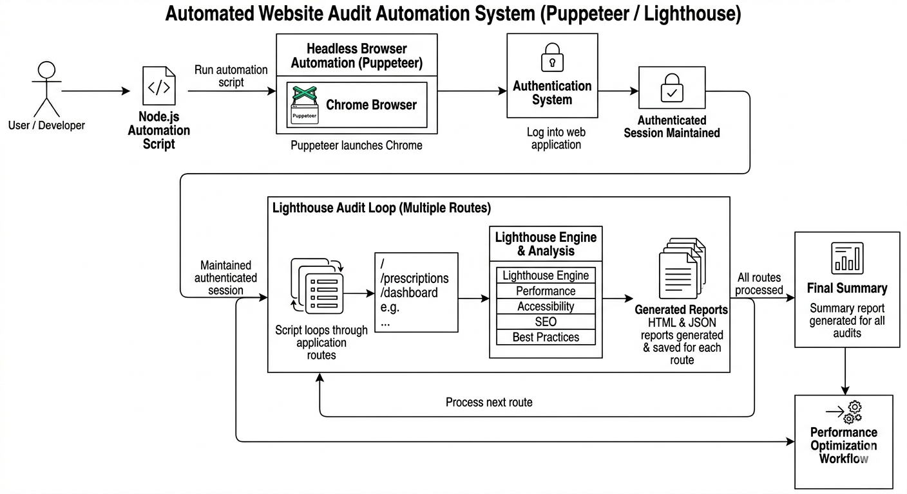
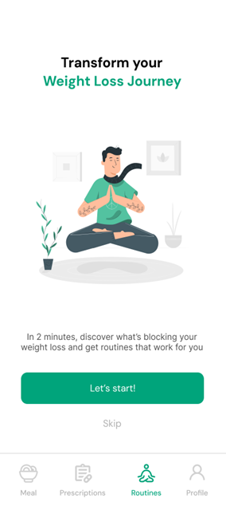
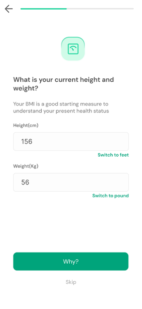
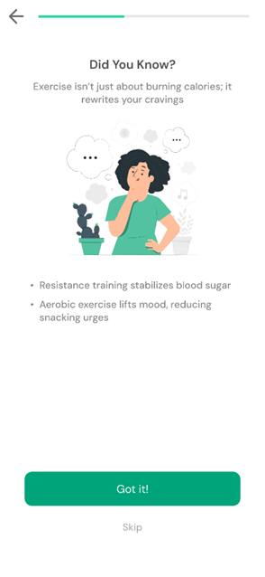

📋 On-the-Job Training
OJT Report
Pranav Dhekane
MES Abasaheb Garware College, Pune
Company: HealToFit
Guide: Ms. Pooja Kamthe
AY: 2025–26
01 / Overview
Introduction.
🔍
How I Got Here
Secured this internship independently through Indeed, demonstrating proactive job search and self-reliance in landing a technical role.
🏢
About HealToFit
A Bangalore-based health-tech startup specializing in lifestyle disorder management, personalized diet planning, and Ayurvedic wellness solutions.
💼
My Role
Joined as a Full Stack Developer Intern, contributing to both frontend and backend systems across multiple live product features.
🎯
Focus Area
Worked across the full product stack — from server-side logic and APIs to UI rendering, notifications, and automated auditing pipelines.
02 / Growth
What I Learned
01
Production Full Stack Dev
Worked on a live, customer-facing application — experiencing real deployment cycles and production constraints.
02
Node.js, Express & EJS
Built server-side features using the full MVC pipeline with templating, routing, middleware, and REST APIs.
03
SCSS & Styling Systems
Implemented structured, maintainable styling using SCSS variables, nesting, and modular architecture.
04
Debugging Real Issues
Diagnosed and resolved complex production bugs under real constraints — far beyond classroom-level debugging.
05
System Architecture
Understood how large codebases are structured, how services communicate, and how features fit into the bigger picture.
06
PWA & Service Workers
Explored Progressive Web App concepts, caching strategies, and background sync for offline-capable experiences.
03 / Project
Web Push Notification Module
Designed and implemented an end-to-end Web Push Notification system integrated into HealToFit's platform. The module handles subscription management, server-sent push events, and delivery tracking — enabling the product to re-engage users with health reminders, diet alerts, and wellness nudges in real time.
Node.js
Web Push API
Service Workers
PWA
VAPID

04 / Project
Puppeteer Automation & Lighthouse
Built an automated performance auditing pipeline using Puppeteer and Google Lighthouse. The system headlessly navigates pages, runs Lighthouse audits, and generates structured performance reports — allowing the team to continuously monitor Core Web Vitals and identify bottlenecks without manual testing.
Puppeteer
Google Lighthouse
Node.js
Automation
Performance

05 / Project
Quiz Module Development
Developed a fully functional interactive quiz module for the HealToFit platform, enabling users to take health and wellness assessments. Built question flow logic, scoring, result rendering, and backend data persistence — contributing directly to user engagement and health profiling within the app.
Node.js
Express.js
EJS
SCSS
REST APIs



06 / Takeaways
Skills Developed
Node.js
Express.js
EJS Templating
SCSS
Puppeteer
Google Lighthouse
PWA
Service Workers
Git & Version Control
Debugging
Code Optimization
REST API Design
Web Push API
Performance Auditing
OJT Report · HealToFit · 2025–26
Thank You
Pranav Dhekane